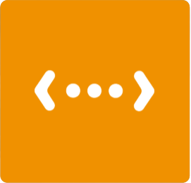

Tu futuro también se programa
Cada isla que recorrieron es un curso del programa Ciencias de la Computación de Ceibal. Así se arma el camino.
- Intro a las CC
 IA desde cero
IA desde cero- Desarrollo web

Programación- Datos
 Micro:bit
Micro:bit
Fase 1 · cursos iniciales
Para 1.°, 2.° y 3.° de bachillerato público de Secundaria y UTU. No hace falta saber programar.
-
Introducción a las ciencias de la computación
El curso de entrada al programa: el punto de partida para todo lo demás.
- Online
- Autoasistido
- Webinars optativos
-
IA desde cero
Qué es la inteligencia artificial, cómo funciona y dónde impacta.
- Online
- Autoasistido
- Webinars optativos
Fase 2 · siete cursos para elegir
Al aprobar la Fase 1 se anotan en la Fase 2 y eligen curso: con tutoría y encuentros en vivo.
-
Desarrollo web
HTML, CSS, cómo fluye la información en internet y frameworks modernos.
- Online
- Con tutoría
- Encuentros en vivo
-
Programación 1 → 2 → 3
Python desde cero, estructuras de datos y programación orientada a objetos.
- Online
- Con tutoría
- Encuentros en vivo
-
Datos para la acción
Recolectar, organizar y analizar datos para decidir mejor.
- Online
- Con tutoría
- Encuentros en vivo
-

Profundización en IA
Técnicas y herramientas de IA, sus aplicaciones y sus desafíos éticos.
- Online
- Con tutoría
- Encuentros en vivo
-
Micro:bit
Programar la placa, simular en MakeCode y resolver problemas cotidianos.
- Online
- Con tutoría
- Encuentros en vivo
Formación continua
-
Mucho más para seguir
Computadora según disponibilidad y plazos, Olimpíada de Robótica, Programación y Videojuegos, y más cursos.
Tu futuro también se programa
Cursos online y gratuitos para bachillerato público de Secundaria y UTU.
Atentos a la próxima convocatoria en ceibal.edu.uy
Recurso educativo · ANEP / Ceibal · ceibal.edu.uy